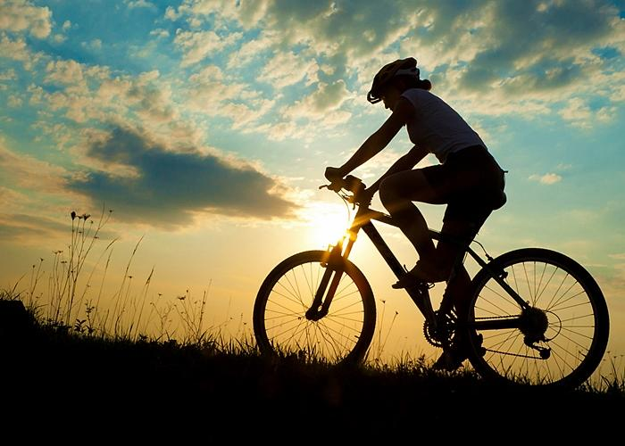

El ciclismo es un deporte en el que se utiliza una bicicleta para recorrer circuitos al aire libre o en pista cubierta y que engloba diferentes especialidades.
Los paisajes de la Media y Alta Guajira serán recorridos por más de 200 ciclistas nacionales e internacionales que llegan al Departamento a hacer parte del evento turístico Guajira Bike Challenge.

Desde la Dirección de Turismo Departamental indicaron que el propósito de este evento es posicionar a La Península como un destino predilecto para los turistas, a través del desarrollo de diferentes actividades y encuentros, que incluyan nuevas experiencias y aventuras.